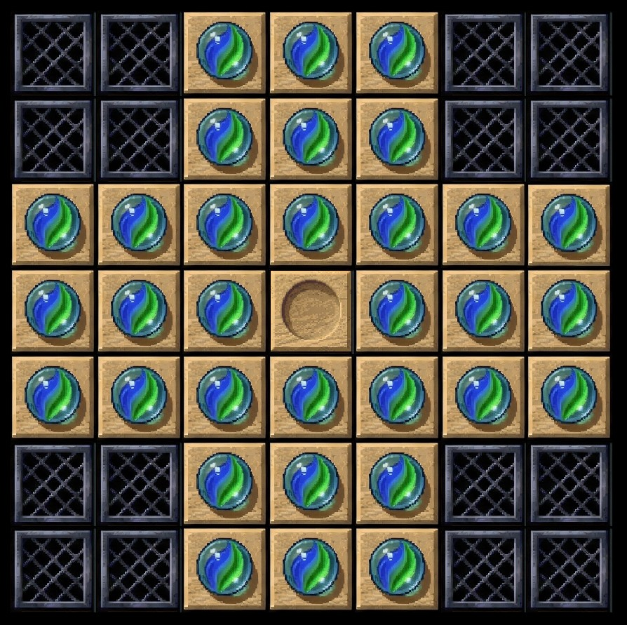

Peg solitaire is that annoying game you might play at your grandma’s house when there’s nothing else better to do. It’s a single player board game — the general concept is that the game board is filled with tokens, and a single open space. The goal is to “jump” pieces (thereby removing them) until only a single token remains (the most common physical versions I’ve played used golf tees).
I recently saw someone make an open source version of this game for smartphones, but it required prospective players to download the game from an app store. Bogus! We can make the game easily enough for the web using Waffle, which means you can play it instantly in a browser. Start off by downloading the Waffle .zip file, then extract its contents to a local directory. The files include an HTML file that loads/displays the game template (defined in game.js). You can open the index.html file (File → Open File → index.html) in a browser and immediately run your code.
As per the Wikipedia entry, we’ll create the “English” style board, that kinda looks like a cross. It’s contained within a 7x7 grid, and the 2x2 areas in the all the corners are considered “dead zones” — you can’t move pieces there. Let’s start off by updating game.js so that Waffle creates a 7x7 grid. We can also set up the game pieces in a cross shape by looping over the board and placing a piece (or non-movable space) in the correct place. The board will end up looking something like this terrible ASCII diagram.
[x][x][·][·][·][x][x] [x][x][·][·][·][x][x] [·][·][·][·][·][·][·] [·][·][·][o][·][·][·] [·][·][·][·][·][·][·] [x][x][·][·][·][x][x] [x][x][·][·][·][x][x]
The algorithm we’ll use to create the board isn’t super brilliant — we’ll start by putting a “peg” in each square, then overwrite a peg with an blocked space or empty space, based on what row/column we’re looping over. If we’re in rows 0 or 1 (our lists in Waffle start at 0, rather than 1), then we place blocks in the first two and last two spaces (columns 0/1 and 5/6). The center space (3, 3) is empty. Rows 5 and 6 follow the same rules as rows 0 and 1.
- const rows = 10;
- const columns = 10;
+ const rows = 7;
+ const columns = 7;
Waffle.init(rows, columns);
- Waffle.onKeyDown(({ key }) => {
- console.log(`pressed ${key}`);
- });
+ // initialize the board here
+ const state = Waffle.state;
+
+ for (let x = 0; x < columns; x += 1) {
+ for (let y = 0; y < rows; y += 1) {
+ // by default, assume the board contains a peg
+ state[x][y] = 'peg';
+
+ // handle the center (have to start w/ an empty space)
+ if (x === 3 && y === 3) {
+ state[x][y] = 'empty';
+ }
+
+ // handle the spaces you can't move pegs to
+ if ([0, 1, 5, 6].includes(y) && [0, 1, 5, 6].includes(x)) {
+ state[x][y] = 'block';
+ }
+ }
+ }
+
+ // update Waffle with the data we just created
+ Waffle.state = state;
Now update the included main.css stylesheet with classes named the same as the state values we just used. The images defined here will be used to display the game objects. You can download some example images, or make your own!
#grid {
/* ... */
- .highlight {
- background-color: blueviolet;
- }
+ body { background-color: black; }
+
+ .peg { background: url('peg.jpg') center/100%; }
+ .empty { background: url('empty.jpg') center/100%; }
+ .block { background: url('block.jpg') center/100%; }
}Save the stylesheet, then reload the HTML file in your browser. You should see something like this:

Awesome! Now we’ll start adding some interactivity. Probably the best way to do this with Waffle is to use a point ‘n click control scheme: click (or tap) once to select a peg, then click again to move to the desired position. If the move is valid, then the display state gets updated. The game.js template has a basic mouse/touch event handler set up; all we need to do is write our logic there. To start, we’ll add a variable to hold a reference to a “selected” peg. Then in the event handler function, we can save that peg whenever the player clicks.
+ let selected = null;
+
Waffle.onPointDown(({ x, y }, { primary, secondary }) => {
- console.log(`${secondary ? 'right' : 'left'}-clicked cell (${x}, ${y})`);
- /* replace this with your own code! */
const state = Waffle.state;
+ if (state[x][y] === 'peg') {
+ selected = {x, y};
+ state[x][y] = 'selected';
+ }
- if (Waffle.isEmpty(state[x][y])) {
- state[x][y] = 'highlight';
- } else {
- state[x][y] = '';
- }
Waffle.state = state;
});
Make sure to update the CSS file to reference the image for the “selected” peg.
#grid {
/* ... */
+ .selected { background: url('selected.jpg') center/100%; }
}Save and reload the page. Now, when you click around, you can see the graphic for each peg change. Remember, the goal here is to be able to click a peg, then click an open space, to have the peg jump and remove another peg. So in the event handler, we can insert a check to see if the clicked space is “open” or not. If it is, we can add some logic to see if a jump was made.
Waffle.onPointDown(({ x, y }, { primary, secondary }) => {
const state = Waffle.state;
if (state[x][y] === 'peg') {
selected = {x, y};
state[x][y] = 'selected';
}
+ if (state[x][y] === 'empty' && selected) {
+ // ensure the selected peg would move exactly 2 spaces
+ const jump = (Math.abs(x - selected.x) === 2 && y === selected.y) || // this is a horizontal jump
+ (Math.abs(y - selected.y) === 2 && x === selected.y); // this is a vertical jump
+
+ // if not a jump, do nothing
+ if (!jump) {
+ return;
+ }
+
+ // this is the piece in between the selected peg
+ // and the clicked peg
+ const removed = {
+ x: (selected.x + x) / 2,
+ y: (selected.y + y) / 2
+ };
+
+ // if the jumped space is not actually a peg (e.g. empty), do nothing
+ if (state[removed.x][removed.y] !== 'peg') {
+ return;
+ }
+
+ // player made a valid jump over a peg; remove it!
+ state[removed.x][removed.y] = 'empty';
+
+ // move selected peg to new place
+ state[x][y] = 'peg';
+
+ // null out the `selected` variable
+ selected = null;
+ }
Waffle.state = state;
});
This is basically the complete logic of the game! All that’s left is to check for the win condition, which is that only a single “peg” is left. Easy enough to do this: loop over all the spaces on the game board, and if there is only one peg left, that means you’ve won.
Waffle.onPointDown(({ x, y }, { primary, secondary }) => {
/* snip */
+ let found = 0;
+ for (let i = 0; i < columns; i += 1) {
+ for (let j = 0; j < rows; j += 1) {
+ if (state[i][j] === 'peg') {
+ found += 1;
+ }
+ }
+ }
+ if (found === 1) {
+ Waffle.alert("Congratulations, you win!");
+ }
Waffle.state = state;
});
Since I’m too lazy to play enough of this game to develop my own solving algorithm, I cheated and followed these instructions to complete the game. Maybe you can memorize those steps and impress your grandma next time you visit.